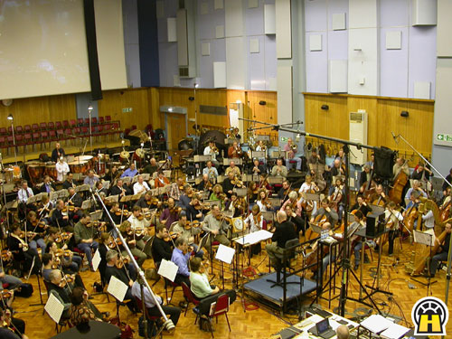
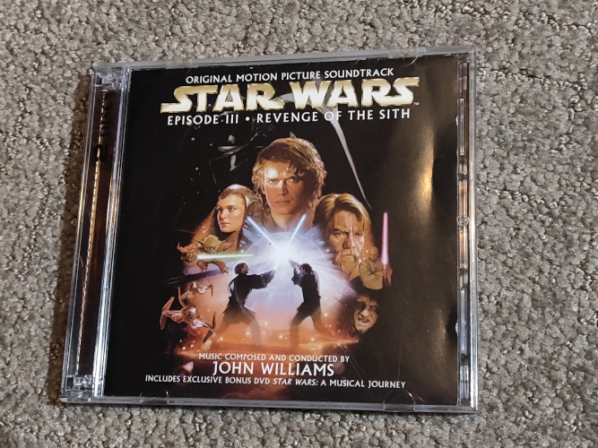

Reviews
Score Review - 3/24/2024
by enderdrag64
Image source: Star Wars: Hyperspace Fan Club, reposted by John Crichton of JWFan.com
{kind=link}
Revenge of the Sith is the final of the three Star Wars prequels, and was at the time believed to be the final entry in the saga. Composer John Williams approached the score with this mindset, creating a score meant to summarize the ideas of the prequels and lead into those of the originals.
As a result of being the “final” entry, ROTS doesn’t have very many new themes. It has a short march for General Grievous, the film’s main henchman; it has an arrival theme, for landing on planets, which is only used twice. It has a big bombastic battle theme for the fight between Anakin and Obi-Wan (the concert suite is titled Battle of the Heroes on the album), which is sort of reminiscent of the similar Duel of the Fates theme from the first prequel. And lastly, it has a sad choir lamentation theme that represents the fall of the Jedi order – it’s also only used twice in the film, but both appearances are highly memorable and underscore dramatic, emotional scenes.
So, what do I think of the score overall? I think it’s a wonderful score, with lots of great highlights. I love the battle music for the opening, especially cues like 1M3 Boys Into Battle, and 1M5 The Elevator Scene. They’re highly memorable, and they make a great start to the film, even if they aren’t overly thematic.
I do find that the middle meanders for a little bit, for example the 6 minute long cue 2M6 Scenes and Dreams doesn’t have too much going on, and cues like 3M1 Council Meeting, while interesting, have large sections copy pasted from previous scores. Even the source cue 3M2a Palpatine’s TV Set is a bit boring, it’s just some low male choir without much melody.
The score starts to turn around about halfway through the fourth reel. 4M3 Palpatine’s Seduction and 4M5 Dialogue with Mace provide some great uneasiness as we approach the turning point, which is realized in 4M6 I Am the Senate, which might be one of the best action cues Williams has ever written. It’s a pity that this part of the film was edited so heavily and that the cue got butchered in the final cut.
From here on out the second half of the film is an absolute masterpiece. Almost every cue is highly memorable and does a beautiful job conveying the emotional depth of the story. Particular standouts for me emotionally include 5M3 Lament, 6M1 It Can’t Be, 6M3 Padme’s Visit, 7M1 The Immolation Scene, and 7M6 Padme’s Funeral.
This half of the film also has some brilliant action music, with cues like 5M6 Moving Things Along, 5M7 Anakin’s Dark Deeds, 6M4 Heroes Collide, 6M7 The Boys Continue, and 6M9 Revenge of the Sith.
Overall, I think this score has some great highlights and is absolutely worth checking out, even if it doesn’t have that many new themes, and it does a beautiful job wrapping up the first 6 films of the Skywalker Saga.
Return to Top
OST Review - 3/31/2024
by enderdrag64
Image creator: Me, picture is of album cover made by Lucasfilm, Ltd.
Revenge of the Sith’s score got a 70-minute OST album, releasing just over half of the 132 minute long score. Obviously from the length, and from being a Williams-constructed OST, it’s not going to be complete. But just how bad is it?
Unfortunately, this album is one of my least favorite albums Williams has constructed for the Star Wars saga. It’s missing tons and tons of my favorite parts of the score, and it includes cues that I think weren’t highlights and probably didn’t need to be released on this album. It’s also very out of order in a nonsensical manner.
Here’s a breakdown of the tracks along with the cues they include:
| OST Title | Cue Title |
|---|---|
| 01 Star Wars and The Revenge of the Sith | 1M2 Main Title |
| 1M3 Boys Into Battle | |
| 1M4 They're Coming Around | |
| 1M5 The Elevator Scene | |
| 02 Anakin's Dream | 2M6 Scenes and Dreams |
| 03 Battle of the Heroes | 6M9 Revenge of the Sith (DVD Version) |
| 04 Anakin's Betrayal | 5M3 Lament |
| 05 General Grievous | 3M7 Riding the Lizard |
| 4M4 Rolling With Grievous | |
| 4M4A Fighting With Grievous | |
| 4M4 Rolling With Grievous | |
| 06 Palpatine's Teachings | 3M2A Palpatine's TV Set |
| 4M3 Palpatine's Seduction | |
| 3M1 Council Meeting | |
| 07 Grievous and the Droids | 2M1 |
| 08 Padme's Ruminations | 4M5A Padme's Ruminations |
| 5M1 Palpatine Instructs Anakin | |
| 09 Anakin vs. Obi-Wan | 6M4 Heroes Collide |
| 10 Anakin's Dark Deeds | 5M7 Anakin's Dark Deeds |
| 6M1 It Can't Be | |
| 11 Enter Lord Vader | 5M6 Moving Things Along |
| 12 The Immolation Scene | 7M1 The Immolation Scene |
| 13 Grievous Speaks to Lord Sidious | 2M5 Grievous Travels to Palpatine |
| 6M2 A Moody Trip | |
| 14 The Birth of the Twins and Padme's Destiny | 7M3 The Birth of the Twins |
| 7M4 The Death of Padme | |
| 15 A New Hope and End Credits | 7M7 A Home for the Twins |
| 7M8 End Credits |
Based on this tracklist you can see that obviously the tracks are out of order. If you wanted to reorder them for a better listening experience, you can try: 1, 7, 13a, 2, 6, 5, 8, 4, 11, 10, 13b, 9, 3, 12, 14, 15
There are several things I don’t like about this OST presentation. Several of the cue combinations are baffling. For example, track 13 combines 2M5 Grievous Travels to Palpatine, a bombastic appearance of Grievous’ theme as he lands on Utapau with 6M2 A Moody Trip, a depressing cue for a crying Padme heading to Mustafar to confront her former lover. These cues have almost nothing in common musically or emotionally, and it is whiplash to put them into the same track. Similarly, putting a cue like 5M3 Lament early in the album takes away the emotional weight it earns by being later in the score.
Another major gripe for me with the OST album is that it includes boring cues like 3M2A Palpatine’s TV Set and 2M6 Scenes and Dreams in place of major score highlights like 4M6 I Am The Senate and 6M3 Padme’s Visit . If I had designed the OST album, I would’ve swapped out half of the chosen cues in exchange for ones that were passed over.
For all of these reasons I think that the official soundtrack album for this film is a disappointment, and it would be better to listen to fanmade complete scores that you can find online, which utilize unreleased material from various LucasArts games to piece together the complete score as recorded.
Return to Top
Useful Film Music Resources:
Discussion Forums:
JWFan:JWFan is the premiere discussion forum for anything related to John Williams and his music, but also has extensive discussions about film music as a whole. It has lots of important information about scores including cue lists, release info and comparisons, OST breakdowns, and information on sources of unreleased music.
FilmScoreMonthly:FilmScoreMonthly is a film score discussion forum run by Lukas Kendall. It used to be a label that published soundtrack expansions 10+ years ago, but in recent years it's primarily just a discussion forum. It has great information about upcoming releases, and several members work for soundtrack companies. The forum also famously does not allow discussion of leaks or bootlegs, unlike JWFan.
Release Databases:
Discogs:Discogs is a database of music releases in general, not just film music, however it does have sizable information on film music. It primarily covers official releases, but it does also sometimes have information on promos and bootlegs. Usually you can tell apart bootlegs because they are labelled as such and aren't allowed to be sold in the marketplace. Discogs can also be valuable for looking at booklet scans
SoundtrackCollector:SoundtrackCollector is a database of music releases similar to Discogs, except it only features film music. It sometimes has content not on Discogs, and vice versa. Unlike Discogs it does not feature booklet scans nor a marketplace.
VGMdb:VGMdb is another database similar to the other two, except focused on videogame and anime music. It has the most different database of the three, having lots of content the other two don't have. Similar to SoundtrackCollector it does not feature booklet scans nor a marketplace, although its interface is more similar to Discogs.
Review Sites:
FilmTracks:FilmTracks is a soundtrack review site run by Christian Clemmenson. He offers extensive written opinions on various scores, with room for comments from readers.
MovieMusicUK:MovieMusicUK is a soundtrack review site run by Jonathan Broxton. Similar to FilmTracks, he has a wide selection of reviews on various scores. He also allows comments from readers, but often receives less of them.
Informational Sites:
Chronological Scores / Soundtracks:ChronoScore is a blogspot page that's original purpose was to reorder tracks on OST albums to put them in chronological order. It still does this, but it will also include other available sources, including promos, isolated scores, composer sites, and leaks and bootlegs. It is often a great resource for learning about these sources when researching a score, although it's not always comprehensive. For an example of what I mean, its Star Wars The Force Awakens page is inaccurate in a few regards, but it informs the reader of the existence of the FYC and of the additional music in the LEGO game.
© 2024 by enderdrag64-design. All rights reserved.